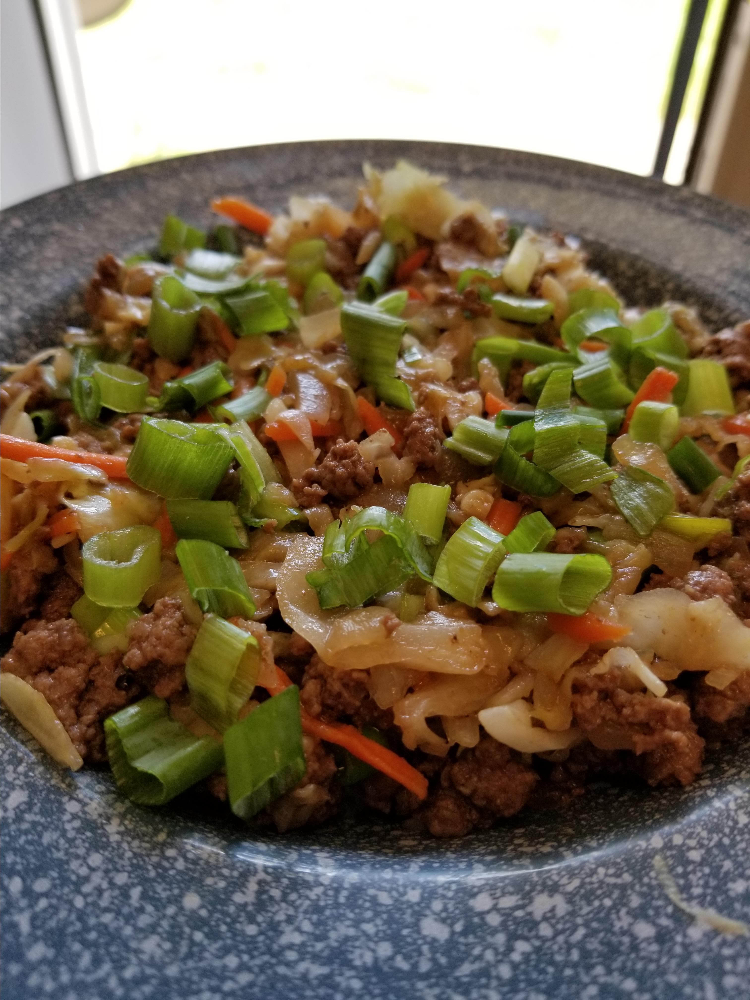

Keto Beef Egg Roll Slaw

Description
This keto slaw uses beef but you can substitute pork instead. Feel free to substitute olive oil for the sesame oil.
Ingredients
- 2 tablespoons sesame oil
- ½ cup diced onion
- 5 green onions, chopped, white and green parts separated
- 3 cloves garlic, minced
- 1 ½ pounds ground beef
- 1 tablespoon chili-garlic sauce (such as sriracha)
- ½ teaspoon ground ginger
- sea salt to taste
- ground black pepper to taste
- 1 (14 ounce) package coleslaw mix
- 3 tablespoons soy sauce
- 1 tablespoon apple cider vinegar
Directions
- Heat oil in a large skillet over medium-high heat. Add diced onion, white parts of the green onions, and garlic. Saute until onions are translucent and garlic is fragrant, about 5 minutes. Add ground beef, sriracha, ginger, salt, and black pepper. Saute until beef is browned and crumbly, about 5 minutes.
- Stir coleslaw mix, soy sauce, and cider vinegar into the beef mixture. Saute until coleslaw is tender, about 4 minutes more. Top with the rest of the green onions.